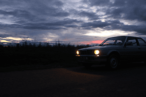

UNE

CRÉATIVITÉ
ENCORE

PLUS GRANDE
QUE L'OCÉAN

Bienvenue sur mon portfolio ! Je m'appelle Toplu Faik, je suis passionnée par la photographie, le design graphique, la vidéo, le développement web et l'animation 3D. J'ai réalisé différents projets tels que des clips musicaux, des teasers pour des séries, ainsi que la création de sites web et d'animations 3D Blender. Si vous souhaitez en savoir davantage sur moi, je suis disponible pour une prise de contact à tout moment.